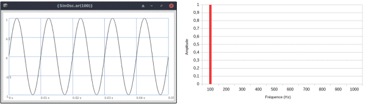
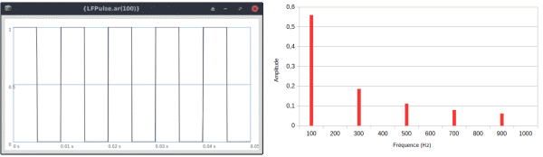
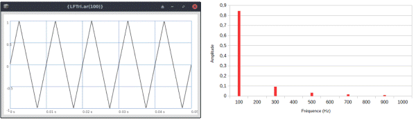
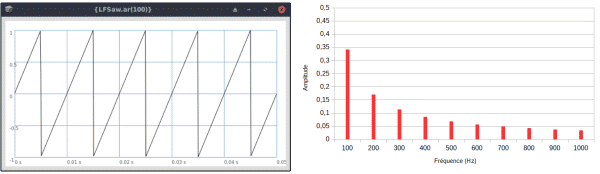
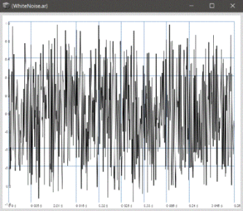

La forme d’onde est la représentation graphique du mouvement de l’onde dans le temps. De plus, cette forme est en relation directe avec le contenu spectral du son qu’elle génère. La forme d’onde qui produit le son le plus simple en termes de structure et de perception est l’onde sinusoïdale. Le son de cette forme d’onde est constitué d’un unique partiel. Ce type de son n’existe pas à l’état naturel, bien qu’il se rapproche d’un son produit par un diapason. Le son produit par cette forme d’onde n’est généralement pas exploité tel quel pour son timbre, mais on l’utilise comme composant élémentaire pour construire des structures plus complexes en les empilant (synthèse additive), en les multipliant (synthèse par modulation en anneau) ou en modulant l’entrée d’un paramètre avec la sortie d’un autre (synthèse par modulation). J'aborde certaines de ces techniques de synthèse dans suite de ces pages.

En superposant des formes d’ondes sinusoïdales et en construisant des structures harmoniques particulières, on tend vers d’autres formes d’ondes géométriquement simples. Ces formes d’ondes sont devenues des formes classiques en synthèse sonore et elles sont livrées par défaut dans plupart des synthétiseurs.
La forme d’onde carrée est un signal à deux états stables qui ont la même durée. Son spectre est constitué d’harmoniques impaires. L’amplitude de chaque partiel est le produit de l’amplitude de la fondamentale et de l’inverse de son rang harmonique.

La forme d’onde triangulaire produit uniquement des harmoniques impaires comme la forme d’onde carrée, mais l’amplitude de chaque partiel est le produit de l’amplitude de la fondamentale et de l’inverse de son rang harmonique au carré. Les harmoniques d’une forme d’onde triangle sont donc moins prégnantes que celles de la forme d’onde carrée.

La forme d’onde en dents de scie produit le spectre harmonique le plus riche des formes d’ondes élémentaires de la synthèse sonore. Le spectre de cette forme d’onde possède toutes les harmoniques et l’amplitude de chaque partiel est le produit de l’amplitude de la fondamentale et de l’inverse de son rang harmonique.

Le bruit est intrinsèque aux instruments percussifs, mais aussi dans une certaine mesure, à la plupart des instruments de l’orchestre. Par conséquent, le bruit est aussi un signal utile en synthèse. Le bruit le plus commun est le bruit blanc. Ce signal est généré par un nombre aléatoire à chaque échantillon. En théorie, il contient toutes les fréquences et il est donc apériodique. Cette propriété théorique de contenir toutes les fréquences lui a conféré sa dénomination de blanc par analogie à l’effet de combiner toutes les couleurs de la gamme visuelle humaine pour obtenir la couleur blanche.

Il existe de nombreux autres signaux, mais le principe est identique à ceux que je viens de présenter. Leur intérêt réside dans leur contenu spectral ou leur forme d’onde. En effet, les signaux ne sont pas exclusivement employés pour générer des sons, ils sont aussi utilisés pour contrôler automatiquement d’autres paramètres. Je traite ce sujet dans la prochaine page.